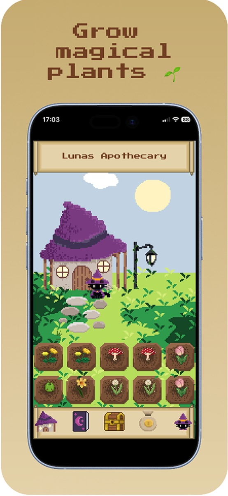
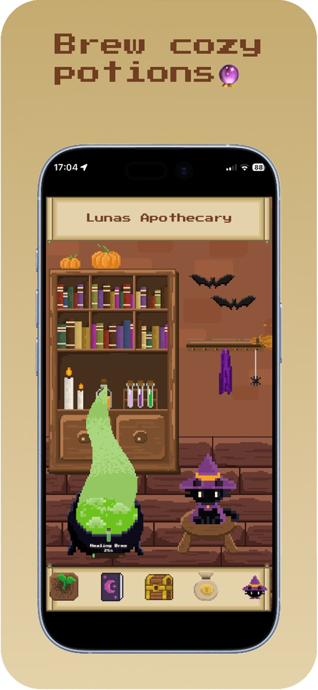
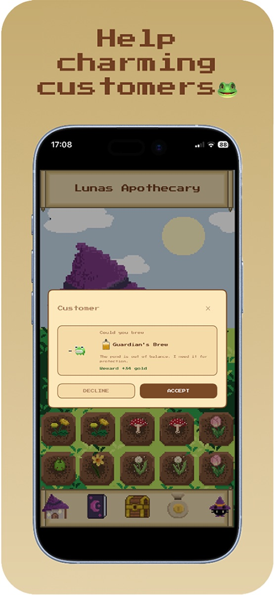
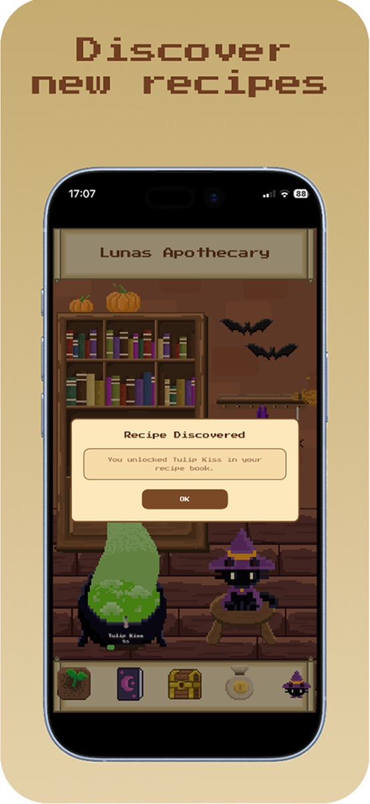
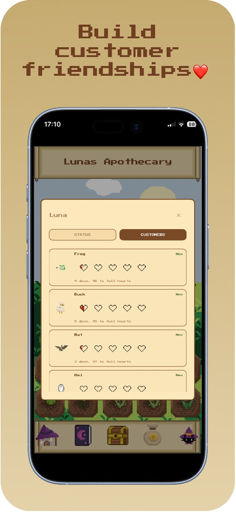

01 / IM GARTEN
Hier wächst dein nächster Zauber.
Säe, gieße und ernte magische Pflanzen. Entdecke seltene Zutaten und achte darauf, welche Pflanzen tagsüber oder nachts schneller wachsen.
DEIN KLEINER MAGISCHER RÜCKZUGSORT
Pflanze ein bisschen Zauber. Braue etwas Besonderes. Und mach aus Lunas kleiner Apotheke einen Ort voller Geschichten.
Im App Store laden Willkommen in Luna’s Apothecary ↓GROW A LITTLE MAGIC

Von der ersten Saat zum nächsten Zaubertrank.
WILLKOMMEN BEI LUNA
Zwischen Gartenbeeten und blubbernden Tränken wartet dein eigener kleiner Laden. Sammle, entdecke und lass ihn mit jeder guten Idee ein bisschen wachsen.
01 / IM GARTEN
Säe, gieße und ernte magische Pflanzen. Entdecke seltene Zutaten und achte darauf, welche Pflanzen tagsüber oder nachts schneller wachsen.
02 / AM KESSEL
Braue nach bekannten Rezepten oder kombiniere deine geernteten Zutaten frei. Vielleicht wartet die nächste Entdeckung schon in deinem Kessel.
03 / IN DEINEM LADEN
Erfülle persönliche Trankbestellungen und lerne wiederkehrende Gäste kennen. Mit erfüllten Aufträgen wachsen eure Freundschaften – Herz für Herz.
DIREKT AUS LUNAS WELT
Garten, Zauberkessel und kleine Begegnungen – in liebevoller Pixel-Art. Öffne die Bilder für eine größere Ansicht.




SO SPIELST DU
Dein Garten liefert die Zutaten. Dein Kessel macht daraus Tränke. Und deine Gäste geben jedem davon einen Zweck.
Behalte Vorrat und Bestellzeit im Blick. So ist der richtige Trank bereit, wenn jemand ihn braucht.
Kaufe Samen, bestelle deine Beete und sammle die Zutaten, sobald sie reif sind.
Wähle ein Rezept oder experimentiere frei. Fertige Tränke wandern in deinen Vorrat.
Nimm passende Bestellungen an und liefere vor Ablauf der Zeit. Dafür erhältst du Gold und Belohnungen.
Investiere in Samen, Rezepte und Verbesserungen für Beete und Kessel. So entwickelt sich deine kleine Apotheke Tag für Tag.
NOCH NEUGIERIG?
Ein gemütliches Gartenspiel und eine Trankladen-Simulation in Pixel-Art. Du ziehst magische Pflanzen, braust Tränke und hilfst den Besuchern deiner kleinen Apotheke.
Der Download ist im deutschen App Store derzeit kostenlos. Ob zusätzliche Käufe angeboten werden und welche Preise gelten, siehst du im aktuellen App-Store-Eintrag und in der App.
Luna’s Apothecary ist für das iPhone konzipiert und benötigt iOS 18.6 oder neuer. Die vollständige aktuelle Kompatibilitätsliste steht im App Store.
Die App ist laut App Store derzeit auf Englisch verfügbar. Diese Website erklärt dir die Spielidee auf Deutsch.
Du kannst dich in deinem eigenen Tempo um Garten und Apotheke kümmern. Angenommene Kundenbestellungen haben allerdings ein Zeitlimit.
Du kannst bekannte Rezepte nutzen oder beim freien Brauen Zutaten kombinieren. Außerdem lassen sich weitere Rezepte im Shop freischalten beziehungsweise kaufen.
Laut Datenschutzerklärung speichert die App den Spielfortschritt lokal auf deinem Gerät. Eine Übertragung an die Entwicklerin oder einen externen Server ist dort nicht vorgesehen. Sichere dein Gerät, bevor du die App entfernst oder wechselst.
EINE NACHRICHT AN LUNA
Du hast eine Frage, eine Idee oder ein Problem im Spiel? Schreib uns mit deinem Gerätemodell, deiner iOS-Version und einer kurzen Beschreibung.
jillappcontact@gmail.com ↗DEIN GARTEN WARTET